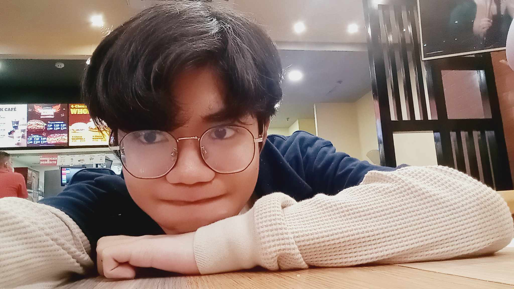

| About me | ||||
| Who am I? | Anthony "Tony" Miguel T. Ferrer, is well known for his unpredictable, unhinged and random acts in school that cause a "freak" in everyone | |||
| Information | Age: 14 | Grade: 9 - Fairness | Fav Color: Periwinkle 💜 | Mood: Crazy |
| Born in Las Pinas city, Anthony Ferrer was a child with big ambitions, although lazy, persistent in his work to achieve his dreams. He goes to school everyday excited to meet his friends. He only wishes to finish school and graduate to repay his parents for the hardwork they've given to help him succeed. Anthony loves to game, especially Valorant and Overwatch. He wishes to start a business, then join an esports team in the future for his passion to turn into his career. | ||||
|  |